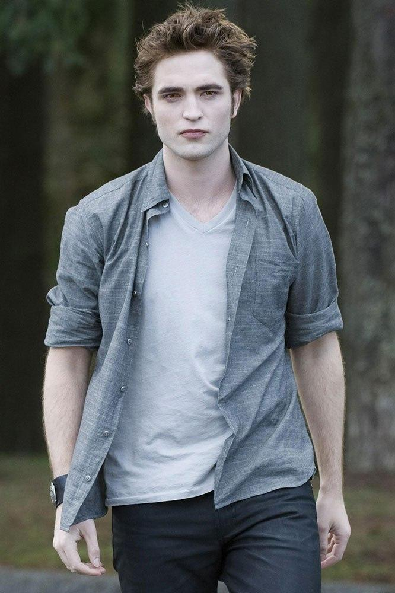
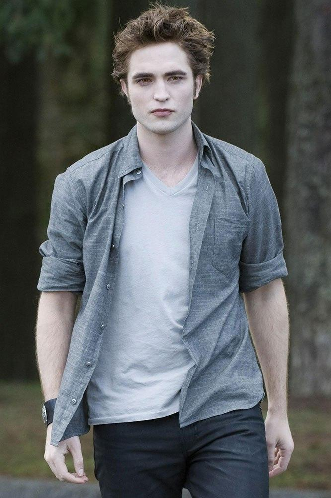

key traits:"Hard square [...] jaw," "full lips," "straight [...] nose," and "bronze hair." Plus, all the vampires are described as being pale and having "straight, perfect, angular [features]."
Born June 20 1901
From Chicago Illinois
Height- 6'2
Changed at 17 in September 1918
Special Ability- Telepathy/Mind reading
Never Think by Robert Pattinson
Edward Anthony Masen was born in Chicago, Illinois; the only child of Edward and Elizabeth Masen. His father provided Edward with many advantages as a successful lawyer, including music lessons and the opportunity to attend private school; however, he and his father were rather emotionally distant due to his busy career that often drew him away from home for business. This absence was made up for by his relationship with his mother; he was the center of her life.
Edward excelled at his studies and became an accomplished pianist. As he grew older, Edward became enamored with the life of a soldier. World War I raged during most of his adolescence, and Edward dreamed of joining the army as soon as he turned 18, which he reminisced about in Midnight Sun, saying that his love for his mother was the only thing that made him reluctant to the thought other than his underage. That changed, however, when he and his parents became sick with the Spanish Influenza in 1918. His father died in the first wave of the influenza. Edward's mother later contracted the Spanish Influenza and begged the doctor who was taking care of them, Dr. Carlisle Cullen, to do everything within his power to save her son. (Elizabeth: "You must do everything in your power. What others cannot do, that is what you must do for my Edward.") Carlisle acted on her wishes when Edward was near death himself. Shortly after Elizabeth died, Carlisle took Edward from the hospital, brought him to his house, and there changed him into a vampire.
Edward formed a deep bond with Carlisle, who became a father figure to him, gaining Edward's trust and love the way his natural father never had. It was Carlisle who first realized Edward's telepathic abilities; he noticed Edward answering questions that Carlisle had not asked aloud. Edward had always had a knack for reading people; after his transformation, this ability blossomed into a true psychic talent. In 1921, Edward gained a mother when Carlisle changed Esme into a vampire to save her life after her suicide attempt. Edward was still young enough to appreciate a mother's care, and Esme gave it to him.
Edward did have a rebellious period at the beginning of his vampire life and left Carlisle and Esme in 1927. During his lone time, he used his mind reading ability to attack the worst people of society, thinking that, as long as he was serving justice, it would not matter that he was feeding on humans. His first victim was Esme's abusive ex-husband, Charles Evenson. A few years later, he regretted this decision and returned to Carlisle's family and their diet of animal blood in 1931. In 1933, Carlisle changed a would-be socialite named Rosalie Hale into a vampire after finding her left for dead by her fiancé. Carlisle and Esme were sometimes concerned that he had no romance in his life, which was partly what prompted Carlisle to change Rosalie. However, as stunningly beautiful as Rosalie was, Edward could not stand her shallow and self-absorbed mind, and the two became nothing more than siblings, and weren't always on good terms. In 1935, Emmett McCarty joined the family when Rosalie found him near death from a bear attack and fell in love with him. Already vampires, Jasper and Alice sought out and found the Cullens in 1950, and adopted themselves into the family after both escaping their tragic pasts. The moment they arrived, Alice moved into Edward's room, much to his dismay.
When the Cullen family were living in Alaska, they encountered the Denali coven, the only other group that shared their diet of animal blood. The leader Tanya showed affection toward Edward, but he did not share that interest.
By 2005, he had attended several colleges and universities, earned two medical degrees and studied several subjects. With his natural parents both passed away, he inherited the Masen house in Chicago, and about every 50 years, he would inherit his family fortune from himself, pretending to be a new heir.
 
